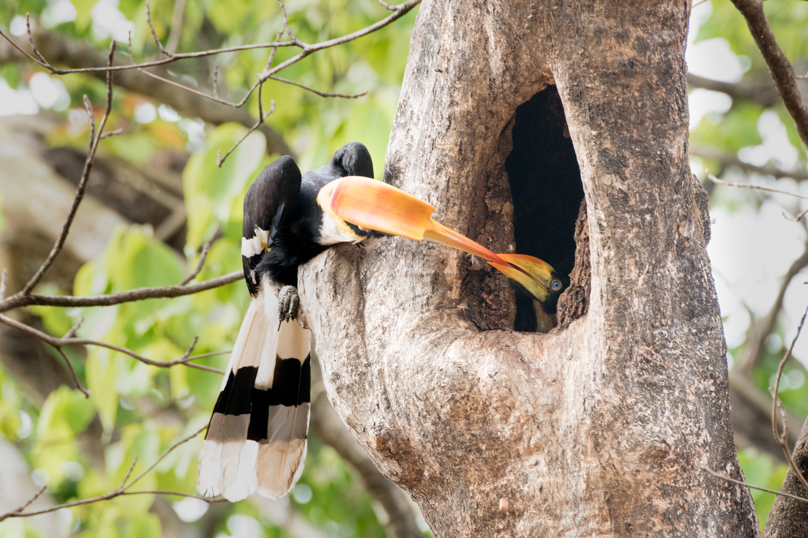
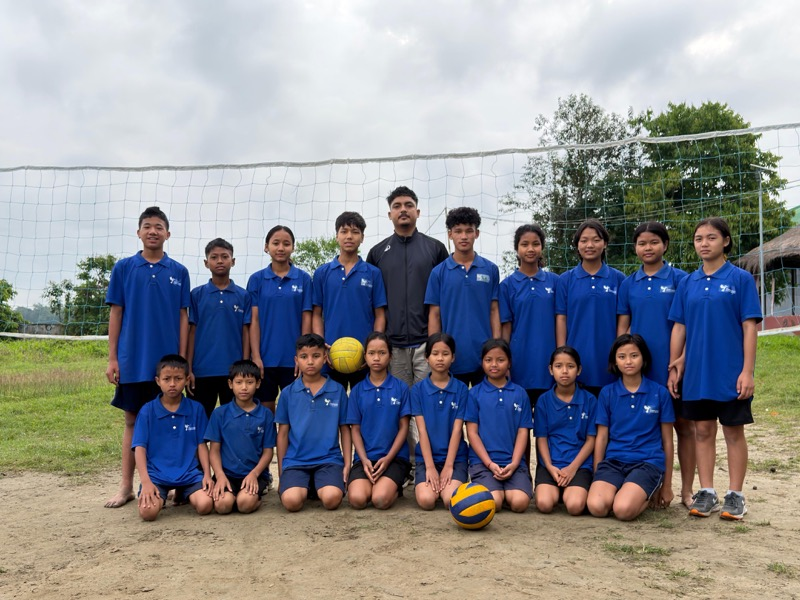
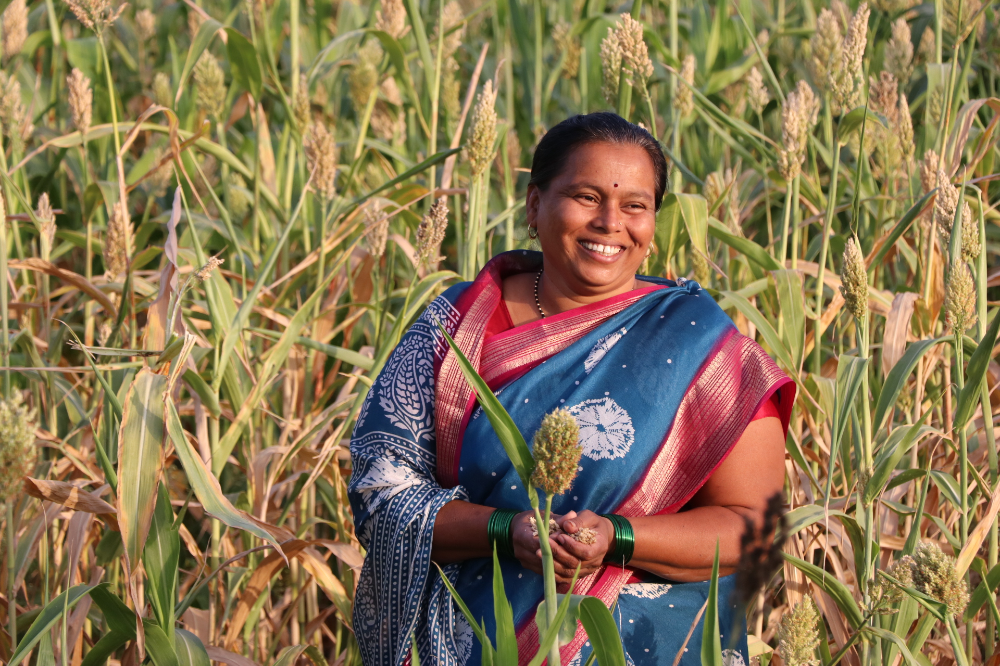

The Rao Family Trust (RAFT) offers grants to nonprofits with a rigorous, evidence-based approach focused on measurable, sustainable results. As a private trust, RAFT channels its resources in a structured, transparent, and purpose-driven manner to ensure that its philanthropic vision continues to inspire meaningful change for generations.




A raft symbolizes hope—simple yet powerful, resilient yet determined. It represents the courage to venture into the unknown, the strength to stay afloat through challenges, and the belief that collective effort can lead us toward better horizons.
Reflecting resilience, ingenuity, and community spirit, this metaphor guides our mission. Through RAFT, we strive to embody these values by helping individuals, communities, and ecosystems navigate challenges, uncover new possibilities, and move forward together toward a more inclusive, sustainable, and hopeful future.
Our PhilosophyAs a private trust, RAFT channels its wealth and resources in a structured, transparent, and purpose-driven manner. We focus on areas that are historically underfunded or complex, working with grassroots organizations to ensure that our intergenerational support leaves a lasting social and ecological legacy.
We focus on critical areas where support and investment catalyze sustainable development, social innovation, and human dignity.
Enable professional education and quality learning for girls ensuring economic independence, transforming them into future leaders, and improving opportunities in remote communities.
Protect biodiversity, wildlife habitats, and critical ecosystems. Support community-led conservation through science-based solutions.
Drive women’s economic empowerment. Build market-relevant skills leading to meaningful careers, higher incomes, and entrepreneurship.
Apply technology, AI, and innovation to address pressing social challenges. Support scalable startup ecosystems and accelerate the diffusion of technology to underserved communities.
Expand access to education, employment, and services. Enable skills, livelihoods, and independence while promoting dignity, inclusion, and participation.
We look forward to collaborating with bold thinkers, visionaries, and grassroot organisations dedicated to creating transformative changes.